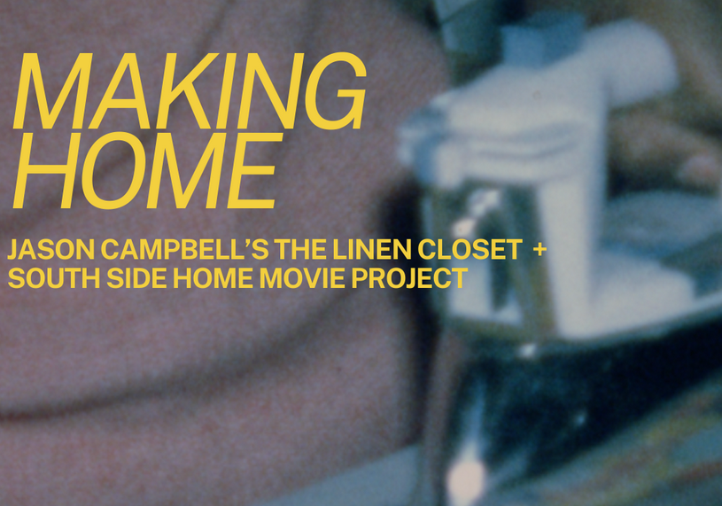

Making Home The Linen Closet + South Side Home Movie Project
As part of South Side Home Movie Project’s 20th Anniversary celebration, this compilation of vintage home movies drawn from the South Side Home Movie Project archives celebrates the materiality of home. Showcasing images of fabric, blankets and bedding at use in domestic spaces, alongside images of raw materials and construction, this dual projection mirrors the open form of Jason Campbell’s The Linen Closet and echoes its commemoration of homemaking as an improvisational and ritual practice of creation. Projected onto each side of the installation’s cedar frame, Making Home turns The Linen Closet into an impromptu cinema where visitors can interact with the archived material of past homes. (15 min compilation x2, looping, simultaneous projection)
Join us for a conversation with artist Jason Campbell, and Jacqueline Stewart (Director, South Side Home Movie Project) in the adjacent Studio Sean Canty, hosting the Regal Reverb installation. This installation serves as the Speakers Corner for the Chicago Architecture Biennial—a space for talks, performances, and gathering. Its design draws inspiration from the former Regal Theater in Chicago’s Bronzeville neighborhood, a major hub of Black culture and music in the 20th century.
Making Home is presented as part of the sixth edition of the Chicago Architecture Biennial. On view through February 28, 2026 at locations across Chicago, SHIFT: Architecture in Times of Radical Change engages timely global issues through the lens of architecture and design. Learn more at chicagoarchitecturebiennial.org.
1:00 – 4:00pm On view, Yates Gallery (4th floor)
4:00 – 4:30pm Conversation with Jason Campbell and Jacqueline Stewart (Director, South Side Home Movie Project), Exhibit Hall (4th floor)